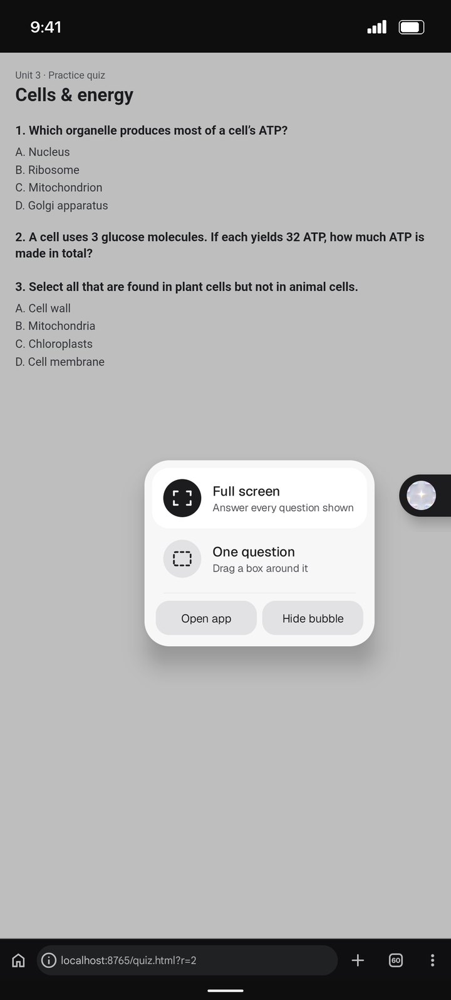
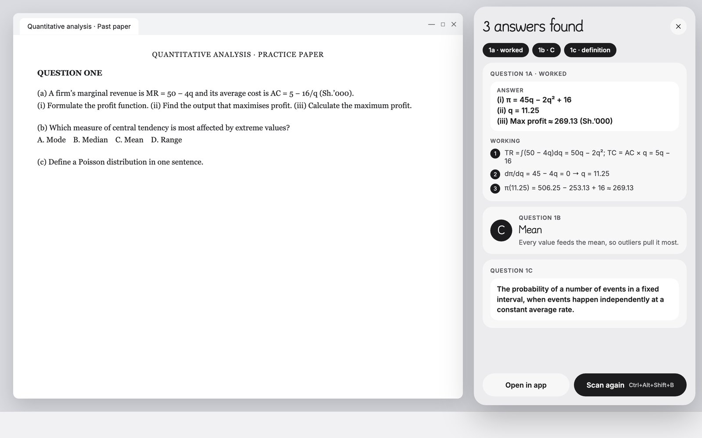
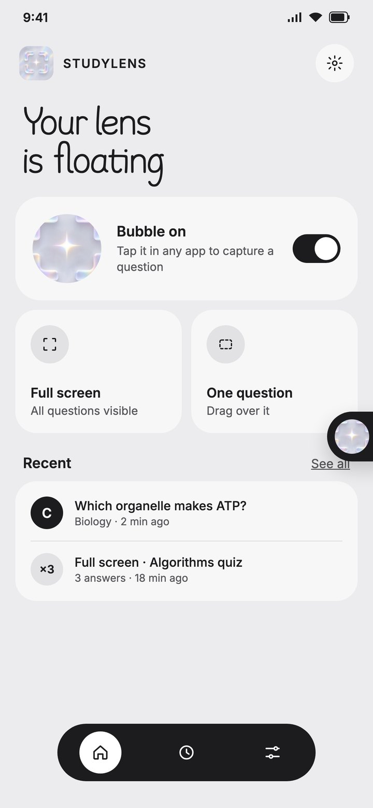
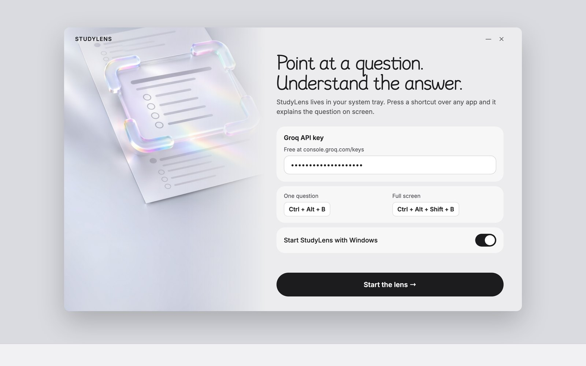

Multiple choice
The letter and the option it stands for. Select-all questions get every right letter.
Free · Open source · Android, macOS & Windows
A floating lens that reads the question on your screen and explains it — one at a time, or the whole page at once. With the working shown, so you actually learn it.
Android 10+, macOS 14+ and Windows 10+. Bring your own free Groq key.

One tap.
Every question on screen, answered.
Multiple choice gets the letter. Calculations get the result and the steps. Definitions get a clean sentence.
The lens
A small glass lens docks to the side of any app. Drag it up or down, flick it to the other edge, and tap it when you need it. Choose Full screen or One question.


Full screen
StudyLens takes one screenshot, finds every question on it — usually two or three — and answers each in its own card. A summary row up top shows every answer at a glance.

One question
The screen freezes and dims. Draw a box around a single question and tap Answer this. The answer slides up underneath, with Next question ready to go.


Shows its working
The letter and the option it stands for. Select-all questions get every right letter.
The final result for each part — (i), (ii), (iii) — and two to five numbered working steps.
Definitions and one-liners, written as a clean sentence you can copy into your notes.
Windows
StudyLens sits in the system tray. Ctrl Alt B lets you drag over one question; add Shift for the whole screen, answered in a side panel.

macOS
A quiet menu bar app. Hover over a question, press ⌃ ⌥ B, and a small card appears beside your cursor with the answer and a one-line reason. Click it for the full explanation.

History
Every scan is saved on your device with its screenshot and answers. Search it, filter by one question or full screen, copy an answer into your notes, or delete it.

Soft silver, one glass lens, and type that gets out of the way.






Privacy
Nothing is recorded. StudyLens only looks at your screen when you ask it to.
The screenshot goes straight from your device to Groq with your own key. There's no StudyLens server in between.
Answers and screenshots live on your device. Clear them any time in Settings.
Free and open source. You'll need a free Groq API key.
The floating lens bubble. Allow “Display over other apps” and turn on StudyLens screenshots in Accessibility.
Download APKMenu bar app for Apple silicon and Intel. Right-click → Open the first time, then allow Screen Recording.
Download for MacTray app, one file, nothing to install. On the SmartScreen prompt choose More info → Run anyway.
Download for WindowsYes. The apps are free and open source. Answers come from Groq, which has a free tier — create a key at console.groq.com and paste it in once.
StudyLens asks Groq which models your key can use and picks one that can read images automatically. If a model is retired, it moves on to the next one.
It's the only way Android lets an app take a single screenshot without starting a screen recording. StudyLens uses it for that alone, and only when you tap the bubble.
The builds aren't signed with a paid certificate yet. On Windows choose More info → Run anyway; on Mac right-click the app and choose Open; on Android allow installs from your browser or file manager.
They're usually good, but AI can make mistakes. That's why StudyLens shows its working — check the steps, and use it to learn, not to skip learning.
Only where your school or exam rules allow it. StudyLens is built for studying, homework and practice, and its answers are always shown openly on screen.